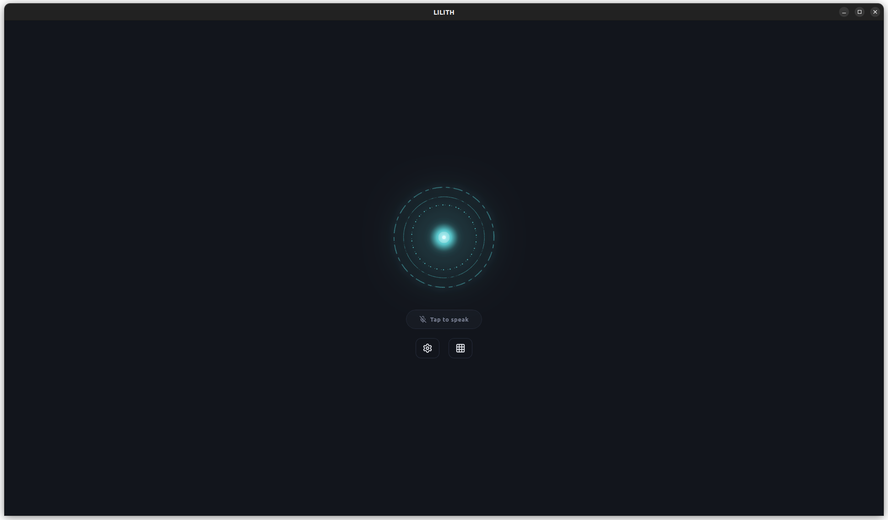

Systems Developer · Python · Local-First AI
I design and build ambient, voice-first AI systems with a focus on privacy, modularity, and long-term architectural integrity. The work documented here is serious, ongoing, and grounded in a specific philosophy: the foundation has to carry the full weight of the final vision.
The Interface

Current Architecture
An App-first, locally-hosted personal OS built as a modular monolith. The app is the new face, featuring a voice orb interface with an optional chat page, while the CLI remains the primary tool for development. A single Python process with a clean internal event bus routes input to reasoning, reasoning to personality, and personality to output — invisibly, with sub-second latency on local hardware. All complexity is hidden behind a modern mobile OS-like application whose primary intention is to organize all your personal data, while an ambient autonomy engine handles background tasks.
The Personality Engine sits between all reasoning and all output — ensuring a consistent voice and identity regardless of which model is actually doing the work. The Airlock pattern sandboxes every tool execution. The Cloud Router escalates only what local hardware cannot handle. The result is a system that feels singular, even when it isn't.
Design Philosophy
Every architectural decision in this project is evaluated against a fixed hierarchy. These are not aspirational values — they are active constraints that govern tradeoffs.
Everything else is secondary. Any feature that degrades the voice experience doesn't get built until the voice experience is right.
No shortcuts that close off future phases. The modular monolith, the event bus, the hot/cold domain separation — these don't change. The models and interfaces that plug into them do.
The developer has to be able to read, understand, modify, and debug any code in the system. Complexity without near-term value is the wrong choice, every time.
No user data leaves the local system without explicit action and understanding. This is not a selling point — it is a precondition of the entire design.
The developer is the primary user. A feature that isn't in daily use isn't a real feature yet. The system has to earn its way into the workflow before it earns resources toward the next layer.
Frame walls after the foundation cures, not before. The current implementation is small. The foundation is sized for what this becomes — not just what it is today.
Development Roadmap
The project builds in phases, each one delivering a working, daily-use system before the next layer is added. What follows is the shape of the plan — not the full detail of it.
Phase 1 · Complete
Voice loop, local LLM, personality, conversation persistence, cloud escalation, and basic tools.
Phase 2 · In Progress
Tool execution engine, Terminal management, GitHub CLI integration, Token/Rate-limit tracking, and Research pipelines.
Phase 3
Sandboxed tool execution (subprocess / Docker), medium and high-risk tool categories.
Phase 4
Proactive awareness, semantic memory expansion, user state tracking.
Phase 5
Web interface, mobile companion (Pocket LILITH), and Cloud Gateway Service.
Phase 6 · Future
A spatial environment for interacting with information that has no natural physical form. Built on a WebSocket event bus completely decoupled from the Python backend.
Writing
Design thinking, architectural decisions, and lessons from building a complex system alone. Written as the work happens.
On the realization that an AI collaborator must be reliable before it can be clever, and what that means for design.
On moving from distributed microservices to a modular monolith, and why the distinction matters.
The principle that keeps complexity manageable when building alone.
Where this project came from and what it's actually trying to be.